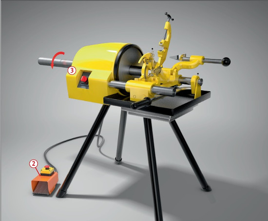
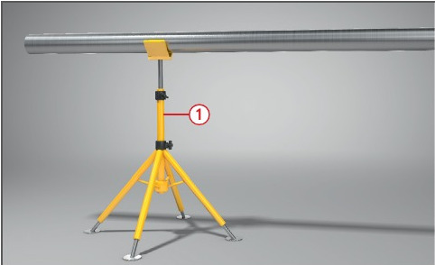
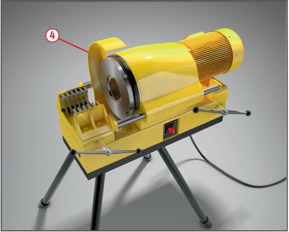

Gefährdungen
- An drehenden Gewindeschneidköpfen bzw. an drehenden
Werkstücken kann es zu
schweren Verletzungen kommen,
insbesondere wenn Kleidungsteile,
Schmuckstücke oder lange
Haare an den rotierenden Teilen
erfasst und aufgewickelt werden.

Schutzmaßnahmen
- Maschinen standsicher aufstellen.
- Maschinen nur im Stillstand
warten und Schlüssel von Spannvorrichtungen vor dem Einschalten abziehen.
- Lange Werkstücke unterstützen
 .
.
- Eng anliegende Kleidung
tragen, Schmuckstücke und Armbanduhren ablegen.
- Niemals Handschuhe tragen.
Zusätzliche Hinweise
Maschinen mit sich drehendem Werkstück
- Sie müssen mit Fußschalter mit selbsttätiger Rückstellung (Unbetätigt – AUS bzw. Betätigt – EIN) ausgerüstet sein
 .
.
- Ein Dreistellungsfußschalter
(AUS – EIN – Not-Halt) ist zu
bevorzugen. Der Nachlauf darf höchstens eine Umdrehung
betragen und es darf kein
weiterer Schalter, abgesehen
vom Not-Halt, zum Stillsetzen
der Maschine vorhanden sein.
- Drehrichtungsschalter für die
Vorwärts/Rückwärts-Umschaltung
dürfen keine dazwischenliegende
AUS-Stellung haben
 .
.
- Ist eine dieser Bedingungen
nicht erfüllt, muss entweder
- der gefährdete Bereich abgesperrt oder
- das Werkstück mit einem Schutzkasten abgedeckt sein.
- Aufhanfen und Anschrauben
von Fittings u. Ä. bei sich drehendem Werkstück ist unzulässig.
Maschinen mit sich drehendem Werkzeug
- Gewindeschneidkopf und alle
anderen sich bewegenden Antriebs-
und Maschinenteile
müssen verdeckt sein
 .
.
Zusätzliche Hinweise bei der Verwendung von Kühlschmierstoffen
- Zum Kühlen möglichst Wasser
oder nichtwassermischbare Kühlschmierstoffe, z. B. Bohr- oder Schneidöle, verwenden.
- Bei der Verwendung von
wassergemischten Kühlschmierstoffen,
z. B. Emulsionen, Nitritgehalt
und pH-Wert mindestens
wöchentlich überprüfen.
- Hautkontakt mit Kühlschmierstoffen
vermeiden. Schutzbrillen
oder Gesichtsschutz, wenn die
Kleidung benetzt werden kann,
auch Schutzschürzen benutzen.
- Nicht mehr verwendungsfähige
Kühlschmierstoffe in Behältern
sammeln, kennzeichnen und
fachgerecht als Sonderabfall
entsorgen.
- Hautschutzplan erstellen.
Arbeitsmedizinische Vorsorge
- Arbeitsmedizinische Vorsorge
nach Ergebnis der Gefährdungsbeurteilung
veranlassen (Pflichtvorsorge) oder anbieten (Angebotsvorsorge).
Hierzu Beratung
durch den Betriebsarzt.
Beschäftigungsbeschränkungen
- Jugendliche über 15 Jahre
dürfen nur unter Aufsicht eines
Fachkundigen und wenn es die
Berufsausbildung erfordert an
Gewindeschneidmaschinen
arbeiten.
- Jugendliche unter 15 Jahre
dürfen nicht an diesen Maschinen
beschäftigt werden.


07/2015